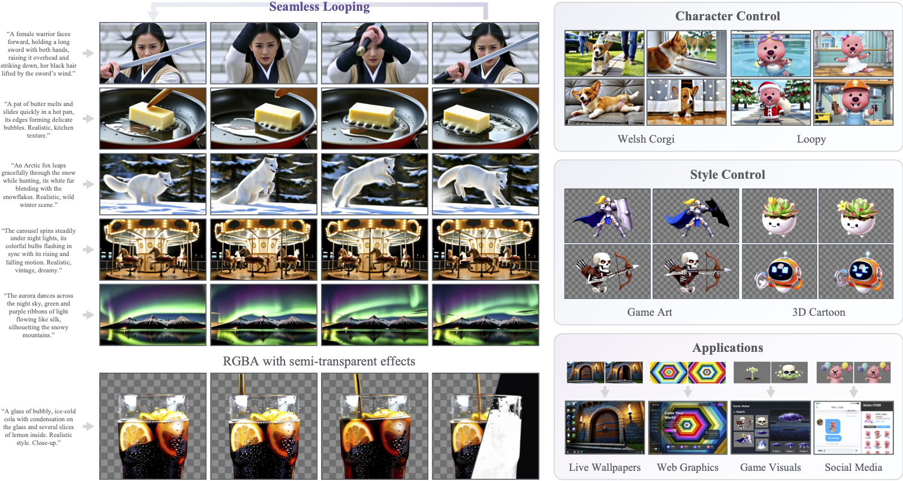
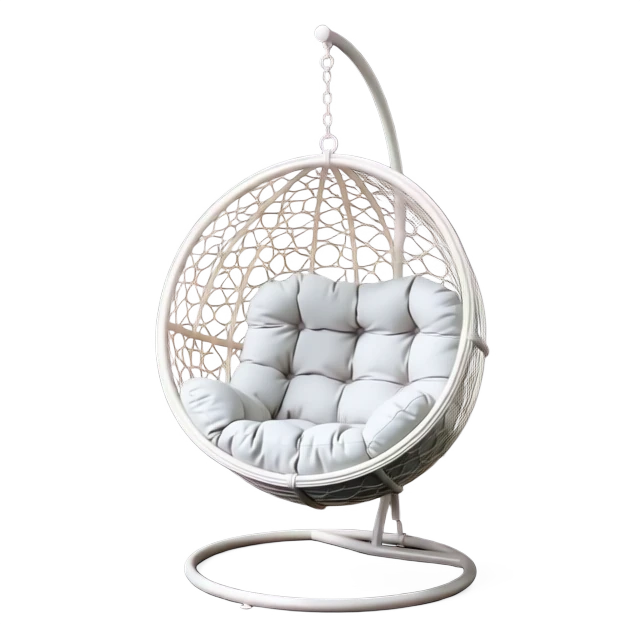

Overview
Loopy is a general framework for high-quality seamless looping video generation. By identifying an anchor layer with the strongest temporal positional control, Loopy applies layer-specific position embedding shifts to transform DiT’s temporal perception from a line into a circle. It supports both RGB and RGBA generation, along with identity control and style transfer, while substantially improving temporal consistency and visual fidelity.

🌟 Showcase
RGB Looping Videos
Prompt: A hummingbird hovers in front of a trumpet flower, its wings beating into a blur, while its long beak repeatedly dips into the flower's heart to sip nectar. Realistic style.
Prompt: A block of butter rapidly melts and slides on a hot frying pan, with delicate bubbles forming around the edges. Realistic style.
Prompt: A tranquil lake reflects snow-capped mountains and sunset glow, with ripples spreading across the water as clouds slowly shift in the sky. Realistic style. Wide shot.
Prompt: A female warrior faces the camera, holding a long sword with both hands raised overhead, then swings it down, her long black hair lifted by the sword's wind. Realistic style.
Prompt: A silver-haired elderly man faces the camera, tilts his head back laughing, then lowers it to wipe tears, his beard trembling with laughter. Realistic style.
Prompt: Auroras dance across the night sky, with green and purple light bands swirling like silk, while snow-capped mountain silhouettes stand silently. Wide shot.
Prompt: Geometric shapes rhythmically grow, transform, and recombine on screen, with colors transitioning between cool and warm tones. Modern style. Medium shot.
Prompt: A male boxer faces the camera throwing continuous straight punches and hooks, sweat and saliva splattering across the lens. Realistic style.
Prompt: A shark's tail fin swings powerfully left and right as its body moves steadily forward through blue water. Realistic style.
Prompt: A soprano in a golden opera gown faces the camera, mouth open singing loudly, chest heaving and gown trembling. Realistic style.
Prompt: A potter presses and rotates a clay form with both hands, wet clay slowly rising and shaping between the fingers. Realistic style.
Prompt: A male violinist faces the camera with eyes closed, drawing the bow forcefully, his hair and upper body swaying dramatically with the performance. Realistic style.
Prompt: A hawksbill turtle slowly flaps its front flippers, swimming through a turquoise coral sea, with bubbles continuously rising from its shell. Realistic style.
Prompt: A Venetian masked dancer faces the camera, repeatedly covering and uncovering her face with a black mask, feathered cape fluttering wildly. Realistic style.
RGBA Looping Videos

Character Control
Loopy
Welsh Corgi
66 the Border Collie
Meet 66, Dr. Xin Wang's Border Collie, whose identity we trained into Loopy. When Xin is not revising papers, he is usually out walking 66. Whenever I look for him, he seems to be wiping 66 down after another walk.
Style Control
Game Art
Game Art
3D Cartoon
3D Cartoon
Multi-layer Video Generation
Foreground
Background
Composited Result
Citation
@article{haotiandong2026loopy,
title = {Loopy: Seamless Video Loop Generation via Anchored Looping Shift of Positional Embedding},
author = {Haotian Dong, Wenjing Wang, Chen Li, Jing Lyu, Xin Wang, Di Lin},
journal = {arXiv preprint},
year = {2026}
}